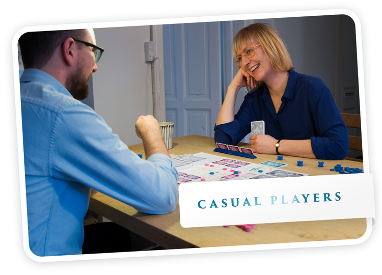
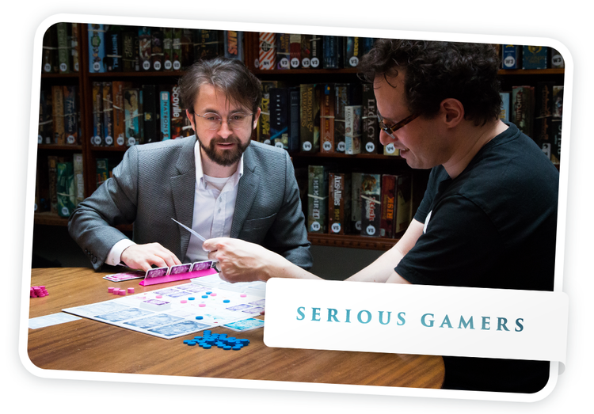
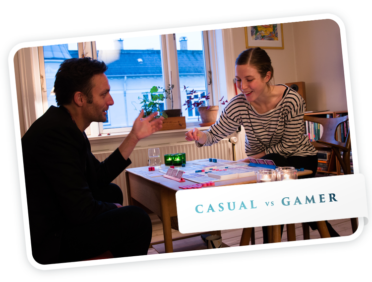

This year experience
A romantic comedy like never before
Fog of love is not about your destination, but your journey towards it. Winning or losing takes backseat when creating fun and memorable stories together.
If you like to explore surprising narratives, if you like to guess and mind read your partner and if you like to be playful with the tools you are given, then Fog of Love is for you.
Casual gamers have responded very well to the game. Fog of Love has simple rules and is easy to set up, since the board serves as a clear guide for all content. Reading the rules or watching Radho's game setup video above is enough to get started.
Nis and Signe above have become regular playtesters. They normally play games like Settlers of Catan. Both were surprised by how easy Fog of Love was to play - and how fun it was!
Fog of Love is at its best when played thematically. Many serious gamers enjoy how Fog of Love offers intense and deep gameplay even while you get to role play more or less outrageous characters.
It is not a game that is played for pure structured competition like Magic, Netrunner or Twilight Struggle. Instead it is like Dead of Winter for two players, where both players incrementally decide whether to be the traitor or not. With a slightly different theme...
At the outset Fog of Love was incepted as a game to be played by a gamer and her or his non-gaming partner. Fog of Love can be played based on long term goals or spur-of-the-moment decisions. Just like life.
The tight integration of mechanics and theme makes this possible. Finding a common path together is central. Contrary to many other games, the casual player does not necessary stand at a disadvantage, as both empathy and strategy are equally important when you have to adjust to and understand each other.